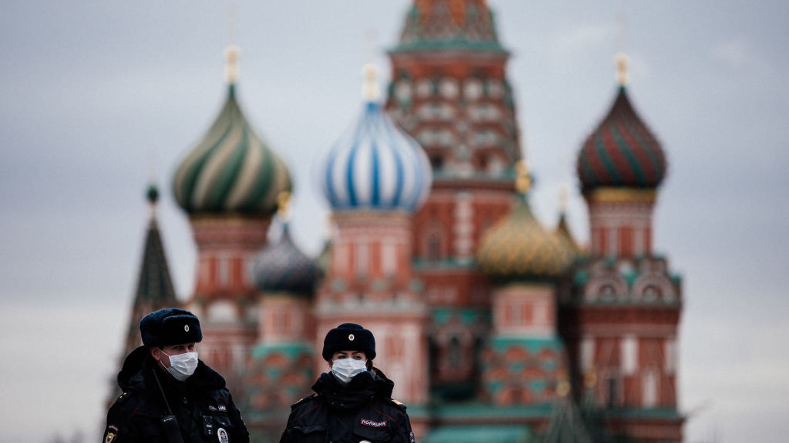
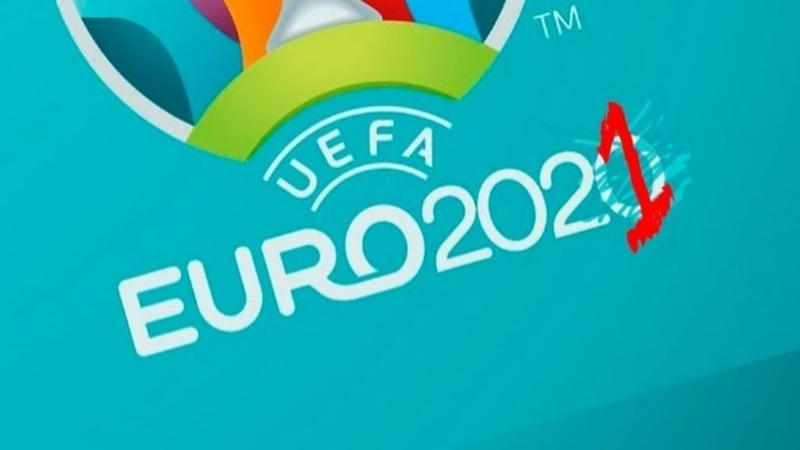

Пандемия COVID-19 — текущая глобальная пандемия коронавирусной инфекции COVID-19, вызванная коронавирусом SARS-CoV-2.
Вспышка впервые была зафиксирована в Ухане, Китай, в декабре 2019 года, а 11 марта 2020 Всемирной организацией здравоохранения объявлена пандемией

Первые сообщения о вспышках болезни появились в Китае 31 декабря 2019 года, а первые клинические проявления у заболевших возникли ранее — 8 декабря 2019 года. Очагом вспышки стал рынок животных и морепродуктов в Ухане. Утверждается, что 30 декабря 2019 года офтальмолог Ли Вэньлян первым сообщил о новом вирусе, аналогичном вирусу SARS, в беседе выпускников медицинского факультета Уханьского университета в чате WeChat, после чего был вызван в полицию и строго предупреждён о недопустимости распространения слухов.
Первый случай за пределами Китая стал известен 13 января. Это была 61-летняя женщина, которая прилетела из Уханя 8 января в Бангкок (Таиланд). К 18 января количество случаев за пределами Китая увеличилось до трёх случаев (два в Таиланде, один в Японии).
В аэропортах Сингапура и Гонконга были приняты меры безопасности: пассажиров, прибывающих из Уханя, специально досматривали на предмет повышенной температуры и опрашивали о симптомах пневмонии. Различные аэропорты в России, Таиланде, Южной Корее, Малайзии и на Филиппинах приняли аналогичные меры.
В феврале 2020 года инфекция начала быстро распространяться по разным странам, несмотря на принимаемые властями Китая карантинные меры. 11 марта 2020 года ВОЗ объявила, что вспышка приобрела характер пандемии. В то же время, в самом Китае со вспышкой инфекции ко второй половине марта удалось в основном справиться. 19—20 марта в континентальном Китае не было зарегистрировано новых случаев заражения (хотя и были выявлены инфицированные, прибывшие из-за рубежа). 25 марта китайские власти сняли карантин в провинции Хубэй. С 28 марта возобновило работу метро в Ухане. 29 марта китайские власти заявили об окончании эпидемии коронавируса в стране.

- 
11 марта ВОЗ объявила, что вспышка COVID-19 приобрела характер пандемии, а два дня спустя — что центром пандемии является Европа. К этому моменту там ежедневно сообщалось о большем количестве новых случаев заражения, чем в пик эпидемии в Китае. При этом растёт число случаев отсутствия эпидемиологических связей для объяснения источника передачи вируса. Лидером по распространению инфекции в Европе стала Италия. На 16 марта число случаев заражения составило там около 25 тысяч, а число жертв превысило 1800. На втором месте по числу инфицированных оказалась Испания — около 8 тысяч случаев заражения и около 300 смертей. Тысячи случаев заражения были зарегистрированы также во Франции и в Германии. Общее число заразившихся за пределами Китая (88 365) превысило по состоянию на 16 марта количество инфицированных в Китае (81 020). В тот же день было объявлено, что внешние границы Шенгенской зоны и Евросоюза с 17 марта закрываются на въезд (предварительный срок действия ограничений — 30 дней).
Во второй половине марта быстрое распространение инфекции по странам Европы продолжилось. В то же время, исключительно быстрый рост числа заражений начался в США. 24 марта ВОЗ предупредила, что эта страна становится новым очагом распространения инфекции. К 4 апреля США вышли на первое место в мире по числу заражений (277 607), обогнав не только Италию, но и Китай (81 782 случая).
Отслеживание контактов также является важным методом для выявления носителей инфекции и остановке последующей передачи. Однако использование правительством данных геолокации с мобильных телефонов для отслеживания контактов в условиях эпидемии вызывает серьёзные опасения в вопросах сохранения неприкосновенности личной информации. По данным на 7 апреля 2020 года, различные экспертные группы занимаются разработкой мобильных приложений, которые могли бы помочь в борьбе с распространением инфекции, не нарушая конфиденциальности. С помощью технологий типа Bluetooth Smart мобильные приложения смогут подавать сигнал пользователю о близком контакте с носителем вируса и опасности заражения.

Продолжающееся распространение инфекции по всему миру привело к обвалу фондового рынка, который начался в середине февраля 2020 года; в частности, промышленный индекс Доу-Джонса, и индекс S&P 500 упали за последующий месяц на 26-27 %. К 27 января, на фоне роста числа заболевших, падение затронуло FTSE 100 и европейские биржи. На Лондонской фондовой бирже из-за опасений по поводу снижения потребностей Китая в металлах и полезных ископаемых сильнее всего упали акции горнодобывающих компаний. Снижению подверглись акции гостиничных холдингов, авиакомпаний и ритейлеров класса люкс (35 % продаж данных товаров приходится на Китай, а 25 января отмечался Китайский Новый год), цена нефти на международных рынках снизилась на 3 %. В то же время подскочили цены на более безопасные активы вроде золота и государственных облигаций.
Эпидемия и связанные с ней карантинные меры привели к снижению спроса на энергоносители со стороны их крупнейшего потребителя и импортёра — КНР. Цена нефти европейского сорта Brent с января по февраль упала с 69 до 54 долларов за баррель, цена спотовых контрактов на российский природный газ европейской площадки TTF снизилась до 102 долларов за 1000 кубометров (в 2019 году средняя цена составляла 204,7 доллара). В дальнейшем (в том числе и из-срыва нового соглашения ОПЕК+) падение резко ускорилось.
Продолжительный стресс, неопределённость и переживаемое чувство утраты и горя приводят к заметному увеличению злоупотребления алкоголем и другими психоактивными веществами.
Было отменено или отложено множество спортивных соревнований, в том числе национальные чемпионаты европейских стран практически по всем видам спорта, включая футбол; был отложен на год чемпионат Европы по футболу 2020 года, а также Летние Олимпийские игры 2020 года, которые должны были начаться 24 июля в Токио.
Было отменено или отложено множество фестивалей, выставок и конкурсов, включая Московский международный кинофестиваль, Каннский кинофестиваль, авиасалон Фарнборо и конкурс песни «Евровидение-2020».